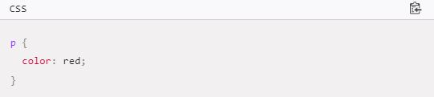

Les CSS (Cascading Style Sheets en anglais, ou « feuilles de style en
cascade ») sont le code utilisé pour mettre en forme une page web. Les
bases des CSS présentent ce qu'il faut savoir pour commencer. Nous
répondrons à des questions comme : Comment rendre mon texte rouge ou
noir ? Comment faire apparaître mon contenu à tel endroit de l'écran ?
Comment décorer ma page web avec une image ou une couleur d'arrière-plan
?
Donc, que sont les CSS, réellement ?
De la même façon que HTML, CSS n'est pas vraiment un langage de
programmation. C'est un langage de feuille de style, c'est-à-dire qu'il
permet d'appliquer des styles sur différents éléments sélectionnés dans
un document HTML. Par exemple, on peut sélectionner tous les éléments
d'une page HTML qui sont paragraphes et afficher leurs textes en rouge
avec ce code CSS :

Faisons un essai : copiez ces trois lignes de code CSS dans un nouveau
fichier dans votre éditeur de texte, puis sauvegardez le fichier sous le
nom style.css dans votre répertoire styles.
Pour que cela fonctionne, il faut appliquer le CSS au document HTML,
sinon la mise en forme décrite dans le fichier CSS n'affectera pas
l'affichage de la page HTML dans la navigateur (si vous n'avez pas suivi
toutes les étapes pour arriver ici, vous pouvez lire l'article Gérer les
fichiers et Les bases du HTML pour savoir par où commencer).
Ouvrez votre fichier index.html et copiez la ligne suivante quelque
part au sein de l'élément head (c'est-à-dire entre les balises
head)
Sauvegardez index.html puis chargez-le dans votre
navigateur.